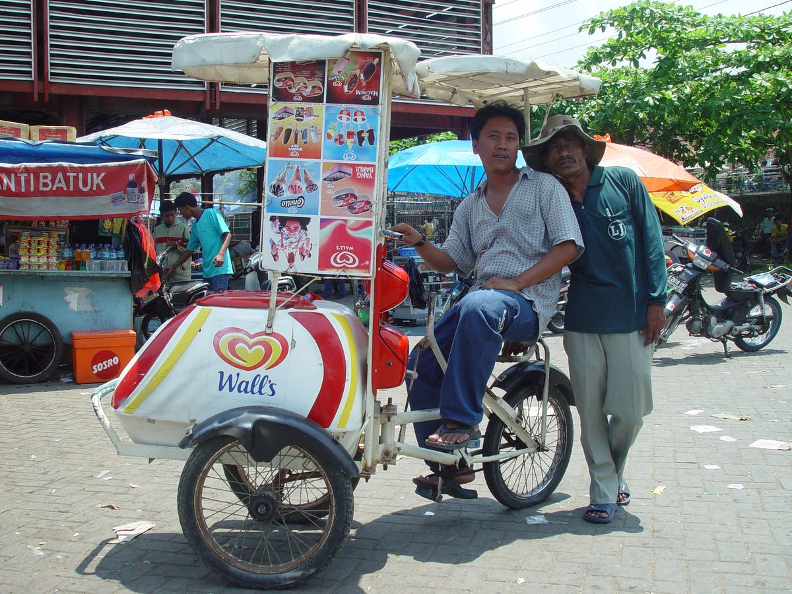
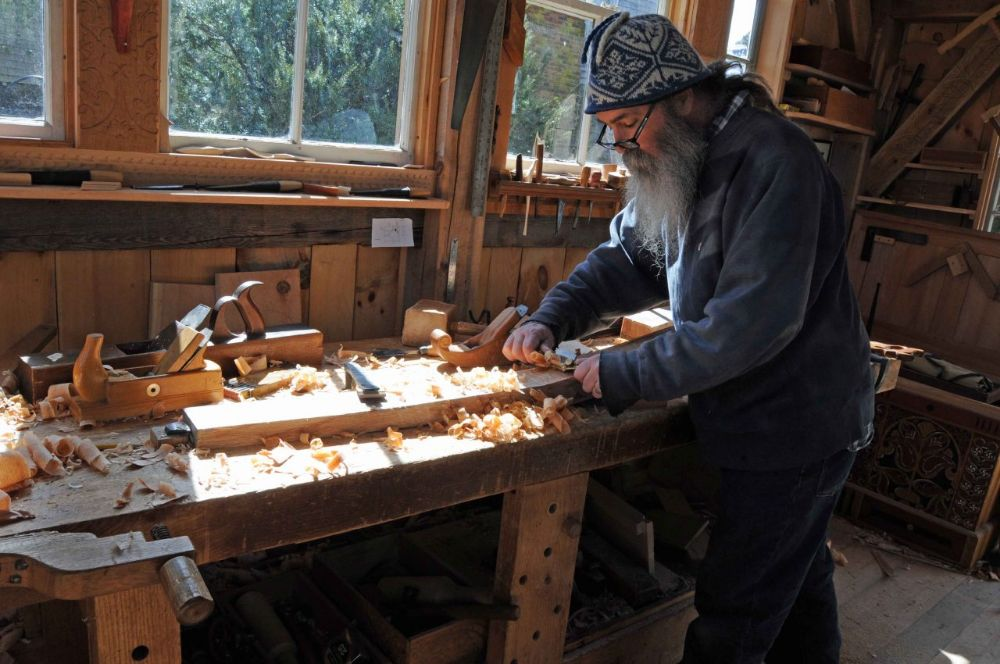

IMPORMAL NA SEKTOR
- Ito ang sektor na walang pormal o salat sa mga dokumentong kailangan sa pagsasagawa ng gawaing pang-ekonomiya.
- Ang kanilang gawain ay hindi nakatala & hindi bahagi ng pambansang kita.
- Ang kita ng sektor na ito ay HINDI naisasama sa kabuuang Gross Domestic Product (GDP) ng bansa
- Paraan ng mamamayan upang magkaroon ng kabuhayan/dagdag kita sa tuwing panahon ng pangangailangan
- Ito ay nagdudulot rin ng pagkakalikha ng mga produkto at serbisyong tutugon sa ating mga pangangailangan
- Kilala rin sa tawag na Underground Economy
- “Hanap buhay na kailangan sa mga bansang papaunlad pa lamang o developing countries.” - W. Arthur Lewis
HALIMBAWA NG MGA TAONG KABILANG SA SEKTOR NA ITO
- Nagtitinda sa kalsada
- Pedicab driver
- Karpintero
- Hindi rehistradong pampublikong sasakyan
MGA ANYO NG IMPORMAL NA SEKTOR
- Hindi Naka-rehistro
- Mga negosyo na walang kaukulang permiso mula sa pamahalaan (Ex: Sidewalk Vendors).
- Hindi Naka-tala
- Legal na negosyo ngunit hindi nagdedeklara ng tamang kita dahil sa hindi pagbibigay ng resibo.
- Ilegal
- Mga gawaing ipinagbabawal ng batas.
IBA’T IBANG ANYO NG IMPORMAL NA SEKTOR
- Mga gawaing maaaring isakatuparan lamang sa loob ng tahanan
- Mga gawaing pansibiko, pagkakawanggawa, at panrelihiyon
- Mga sari-sari stores, pagtitinda sa labas ng bahay o sidewalk, paglalako ng kalakal o serbisyo
- Ilegal na gawain tulad ng pagnanakaw, pagbebenta ng ilegal na gamot, piracy, at prostitusyon
KAHALAGAHAN NG IMPORMAL NA SEKTOR
- Sinasalo nito ang mga mamamayan na hindi makapasok bilang mga regular na empleyado sa isang kompanya.
- Nagbibigay ng pagkakataon sa maraming Pilipino na makapaghanapbuhay
- Nagsisilbing tagasalo ng mga mamamayang may mahigpit na pangangailangan
- Malaki ang naitutulong sa mga konsyumer ang mga kalakal at serbisyong mula sa impormal na sektor dahil sa MURA nitong halaga
DAHILAN KUNG BAKIT PUMAPASOK SA IMPORMAL NA SEKTOR ANG MGA MAMAMAYAN
- Makaligtas sa pagbabayad ng buwis sa pamahalaan
- Makaiwas sa masyadong mahaba at masalimuot na proseso ng pakikipagtransaksyon sa pamahalaan (bureaucratic red tape)
- Kawalan ng regulasyon mula sa pamahalaan na kung saan ang mga batas at programa ay hindi naitutupad nang maayos
- Makapaghanapbuhay nang hindi nangangailangan ng malaking kapital o puhunan
- Malabanan ang matinding kahirapan
IBON FOUNDATION
- Non-Governmental Organization.
- Nagsaliksik sa mga usaping sosyal, politikal, at ekonomiko ng bansa.
- Ang impormal na sektor ay pamaraan upang magkaroon ng kabuhayan.
MGA BATAS, PROGRAMA & PATAKARANG PANG-EKONOMIYA KAUGNAY SA IMPORMAL NA SEKTOR
- Republic Act 8425 - Social Reform and Poverty Alleviation Act of 1997:
- Itinatadhana ng batas na ito ang pagkilala sa impormal na sektor bilang isa sa mga disadvantaged sektor ng lipunang Pilipino na nangangailangan ng tulong sa pamahalaan.
- Republic Act 9710 - Magna Carta of Women:
- Kumikilala ito sa ambag at kakayahan ng kababaihan para itaguyod ang pambansang kaunlaran.
- Presidential Decree 442 - Philippine Labor Code:
- Pangunahing batas ng bansa para sa mga manggagawa.
- Republic Act 7796 - Technical Education and Skills Development Act of 1994:
- Layunin ito na hikayatin ang kabuuang partisipasyon & pakikiisa ng iba't ibang sektor ng lipunan gaya ng industriya, paggawa, lokal na pamahalaan, teknikal at bokasyonal.
- Republic Act 8282 - Social Security Act of 1997:
- Tungkulin ng estado na paunlarin, pangalagaan at itaguyod ang kagalingang panlipunan at seguridad ng mga manggagawa.
- Republic Act 7875 - National Health Insurance Act of 1995:
- (Philhealth) na naglalayong mapagkalooban ang lahat ng mga mamamayang Pilipino ng isang maayos at sistematikong kaseguruhang pangkalusugan.
- DOLE Integrated Livelihood Program (DILP):
- Ipinatupad ng DOLE na nauukol sa pangkabuhayan pangkaunlaran sa pamamagitan ng mga pagsasanay ng mga mamamayan partikular sa mga self-employed at mga walang sapat na hanapbuhay.
- Self-Employment Assistance Kaunlaran Program (SEA-K):
- Pangkabuhayang programa ng DSWD na nagbibigay ng mga gawain & pagsasanay upang mapaunlad ng mga mahihirap na pamilya ang kanilang mga kasanayan at makapagsimula ng sariling negosyong pangkabuhayan.
- Integrated Services for Livelihood Advancement of the Fisherfolks (ISLA):
- Para sa mga munisipalidad o bayan na ang pangunahing ikinabubuhay ay pangingisda.
- Cash-for-Work Program (CWP)
- Programa ng DSWD:
- Sa ilalim nito ang mga biktima ng kalamidad ay bibigyan ng kabayaran kapalit ng serbisyong kanilang isasagawa o pagtulong sa panahon ng rehabilitasyon at rekonstruksiyon ng mga 2 nasalantang lugar.
- Pantawid Pamilyang Pilipino Program (4Ps)
- Tulong-pinansyal sa pinakamahihirap na Pilipino kapalit ng pagsunod sa mga kondisyong pangkalusugan at pang-edukasyon ng kanilang mga anak
KATANGIAN/SALIK NG IMPORMAL NA SEKTOR:
- Ang gawain ay maaaring lamang isakatuparan kahit sa loob ng tahanan.
- Mga gawaing pansibiko, pagkakawanggawa, & panrelihiyon.
- Mga sari-sari stores, pagtitinda sa labas ng bahay o sidewalk, pagloko ng kalakal o serbisyo.
- Ilegal na gawain, gaya ng pagnanakaw.
- Makaligtas sa pagbabayad ng buwis sa pamahalaan.
- Makaiwas sa masyadong mahaba & masalimuot na prosesong pakikipagtransaksiyon sa pamahalaan o “bureaucratic red tape”; sa aspektong ito’y pumasok ang labis na regulasyon ng pamahalaan.
- Kawalan ng regulasyon mula sa pamahalaan na kung saan ang batas & programa ay hindi naitutupad nang maayos.
- Makapaghanapbuhay nang hindi nangangailangan ng malaking kapital o puhunan.
- Mapangibabawan ng matinding kahirapan.
EPEKTO SA EKONOMIYA NG IMPORMAL NA SEKTOR:
- Pagbaba ng halaga ng nalilikom na buwis.
- Paglaganap ng mga ilegal na gawain.
- Banta sa kapakanan ng mga mamimili.

